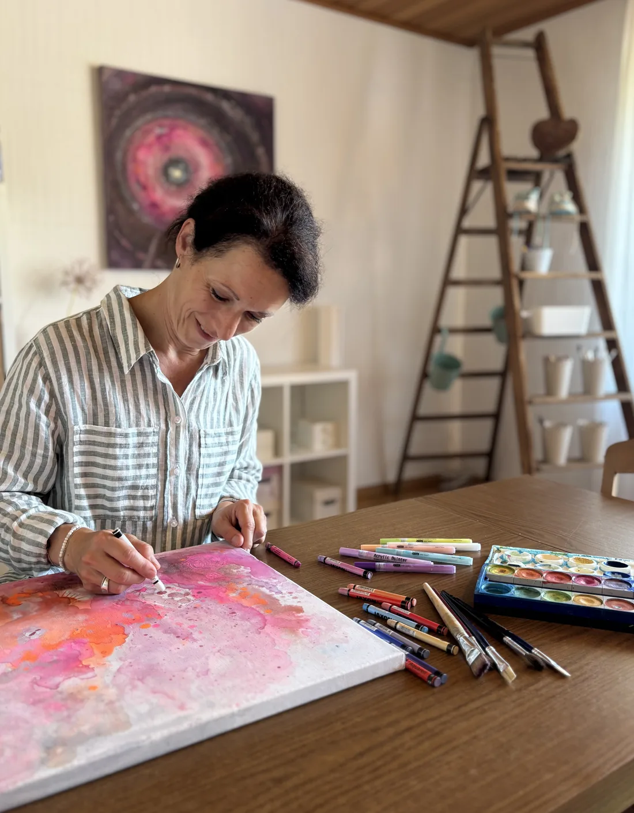

Über mich
Hallo, ich bin Tanja
und lebe mit meiner Familie in Geldern-Walbeck. Ich bin Erzieherin und kunsttherapeutischer Coach.
Farben begleiten mich schon mein ganzes Leben. Im Malen habe ich für mich einen Weg gefunden, zur Ruhe zu kommen, Gefühle auszudrücken, Neues über mich zu entdecken oder auch einfach nur zu experimentieren.
Durch die Ausbildung zum kunsttherapeutischen Coach konnte ich die Kraft der Farben hautnah erleben.
Aus dieser Erfahrung ist die „Pusteblume“ entstanden: ein Ort, an dem Du ohne Leistungsdruck gestalten darfst – im kunsttherapeutischen Coaching oder im freien Gestalten.
Ich hoffe, ich kann auch Dich für die Kunst und deren Kraft begeistern und freue mich auf Dich : )
Tanja Roosen